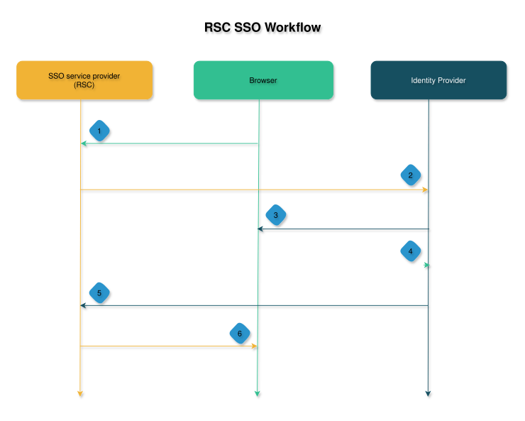

RSC SSO workflow
RSC supports configuring single sign-on with an identity provider for secure authentication.
With single sign-on (SSO), you can log in to RSC using credentials associated with an identity provider (IdP). RSC uses IdP for authentication and the group attributes for authorization.
RSC integrates with any SAML 2.0-enabled IdP. Using an IdP, you can configure advanced security features such as MFA.
You can configure custom SAML attribute keys while adding or updating the SSO IdP. RSC provides the flexibility to configure attribute keys within the SSO wizard, enabling you to define the SAML attribute keys for user email addresses and groups before testing and saving their SSO connection. You can also reset the SAML attributes to the default Rubrik values.
To ensure that the SSO works, you must perform specific configurations on RSC and in the IdP. You can perform these configurations either through metadata file exchange or by filling in the appropriate fields in the IdP or in RSC.
RSC simplifies this multi-step process by combining all the required configuration steps into a wizard. Updating RSC SSO configuration requires performing the following steps:
- Providing RSC details to the IdP
- Updating the IdP details in RSC
- Testing the SSO login

- Browser: Log in to RSC using a browser.
- SSO service provider: After you log in to RSC using a browser, RSC sends a SAML request to the IdP for authorization.
- Identity provider: After RSC sends a SAML request, IdP verifies the SAML request and redirects you to the IdP login page in a browser.
- Browser: Log in to IdP using a browser.
- Identity provider: After you log in to IdP, the IdP generates a SAML response and sends it to RSC with email and group attributes.
- SSO service provider: On receiving the SAML response from IdP, RSC authenticates the attributes and logs you in to RSC.